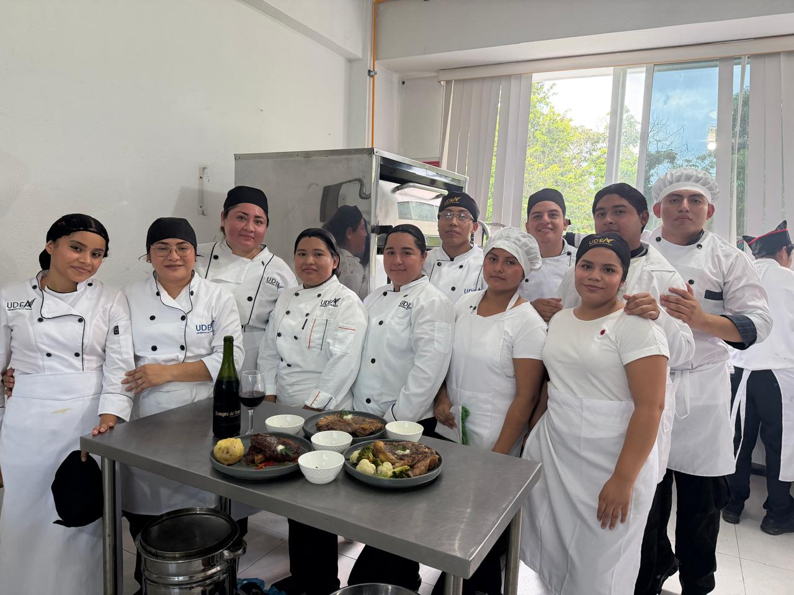
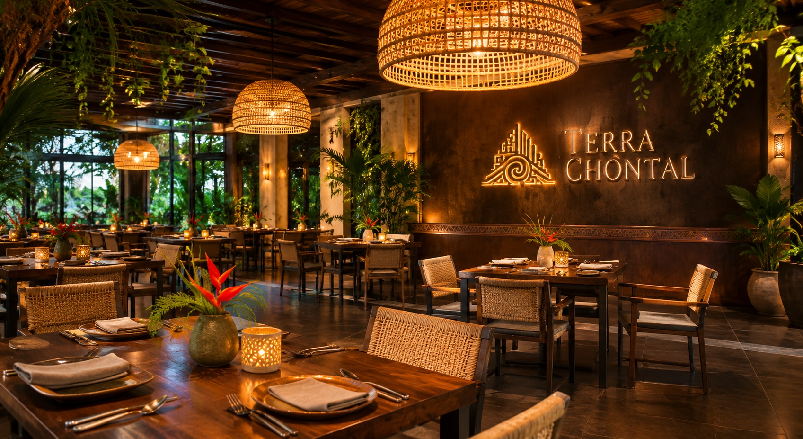
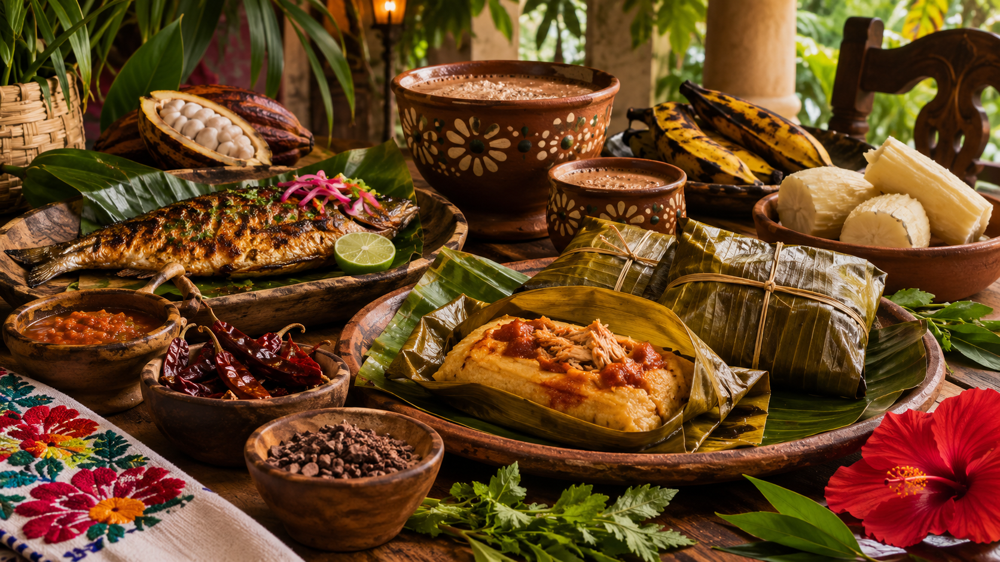
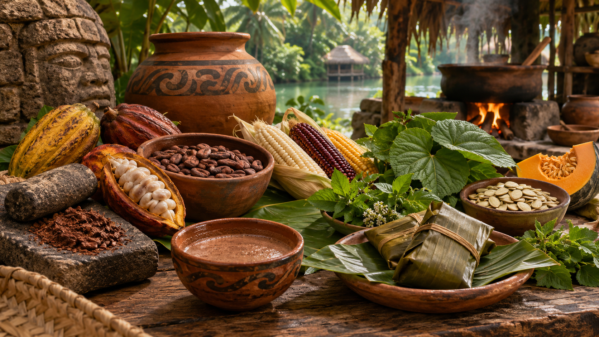

Nuestra misión
Reinterpretar la herencia culinaria tradicional de Tabasco bajo los más altos estándares de la alta cocina contemporánea.

EL EQUIPO TERRA CHONTALTerra Chontal nace de la profunda convicción de enaltecer la riqueza biocultural del trópico tabasqueño a través de la alta cocina. Fundado bajo una mirada de respeto absoluto por el origen, el proyecto rinde tributo a las comunidades chontales y a los antiguos saberes que han custodiado los secretos de la selva, los ríos y los pantanos durante generaciones.
Nuestra cocina es un puente entre la memoria ancestral y la vanguardia culinaria: un espacio donde el cacao criollo, las hierbas endémicas, la pesca de río y los recetarios de solar se reinterpretan con técnicas contemporáneas y precisión técnica internacional.
Descubre nuestra cocina →
TERRAReinterpretar la herencia culinaria tradicional de Tabasco bajo los más altos estándares de la alta cocina contemporánea.
Ser un referente de la cocina regional, inspirando orgullo por nuestros sabores y patrimonio gastronómico.
Cocina de territorio y estricta temporalidad: técnica al servicio de la pureza y complejidad de los ingredientes nativos.
Tres creaciones que cuentan la historia de Tabasco desde una mirada contemporánea.
Para apreciar la evolución de la cocina ancestral de nuestros ríos y pantanos, sugiero comenzar el recorrido degustando la Tortuga en Verde en su versión adaptada con robalo. El equilibrio herbal de la hoja santa y la acidez natural de la naranja agria limpian el paladar y preparan los sentidos para la intensidad aromática y el picor sutil del Robalo en Costra de Pepita y Amashito, cerrando con la profundidad tostada del Pato en Pipián Negro. Recomiendo acompañar este trío con una jícara fría de agua de matalí con limón criollo para refrescar entre cada bocado.
— RECOMENDACIÓN DEL CHEFUna herencia ancestral que sigue viva en cada sabor.
La gastronomía tabasqueña tiene sus raíces en las antiguas culturas olmeca y maya, así como en las tradiciones de los pueblos yokot'an. Ingredientes como el maíz, el cacao y las hierbas regionales han formado parte de su identidad culinaria durante generaciones.
La riqueza natural de Tabasco ha dado vida a preparaciones emblemáticas como el pejelagarto asado, los tamales de chipilín, el mone y el tradicional pozol de cacao.
Con el paso del tiempo, la combinación de saberes indígenas e influencias posteriores enriqueció una cocina caracterizada por sus aromas, ingredientes y técnicas tradicionales.


Cada platillo conserva una parte de nuestra historia. En TERRA CHONTAL, honramos ese legado reinterpretando los sabores tradicionales mediante técnicas contemporáneas, sin perder el respeto por nuestras raíces.
Nuestra cocina no solo alimenta los sentidos; también mantiene viva la memoria de nuestra tierra.
Detrás de cada platillo hay manos que aprenden, ideas que se encienden y un equipo que transforma cada práctica en una historia digna de compartir.
Experiencias que forman parte de nuestro aprendizaje gastronómico.
Pequeñas historias para conocer mejor nuestro patrimonio gastronómico.
Un equipo unido por la curiosidad, el respeto al producto y el amor por la gastronomía.
Cada integrante aporta una mirada única a esta cocina que honra las raíces de Tabasco.
Déjanos preparar un lugar para ti. Completa tus datos para solicitar una mesa. Tu reservación estará sujeta a confirmación.
Una mesa, una historia y una experiencia para recordar.
WhatsApp ↗Av. de los Sabores 125, Zona Centro
Cunduacán, Tabasco, México
Martes a domingo
13:00–17:00 · 19:00–22:00
Lunes: descanso.
terrachontal@gmail.com
+52 993 123 4567